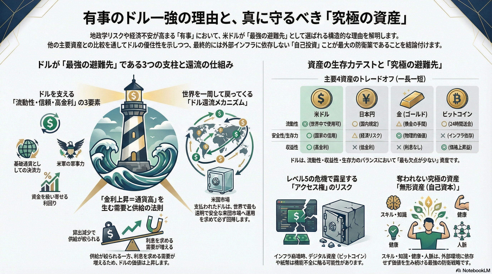

図解：有事のドル買いと資産の正体

「有事のドル買い」の動画で使用した、ドルの強さと資産特性を整理した図解です。
この画像では、2つの重要な概念を視覚化しています。
● ドルの還流メカニズム（Only Game in Town）：
米国が世界へ支払ったドルが、再び「米国債」や「米国株」という形でアメリカへ戻ってくる「巨大な循環構造（リサイクル）」を示しています。この規模と透明性を持つ代替市場が存在しないことが、借金大国アメリカの通貨が最強であることの構造的理由です。
● 有事の資産比較マトリクス（ストレステスト）：
ドル、円、金（キン）、ビットコインを「流動性、安全性、収益性、生存力（インフラ依存度）」の4つの指標で評価しています。
この図から、すべての資産には一長一短（トレードオフ）が存在し、ビットコインは「インフラ（電力・通信）崩壊」に弱く、キンは「流動性（使いやすさ）」に難があることがわかります。
ドルが選ばれるのは完璧だからではありません。他の資産と比較して**「最も欠点が少なく、バランスが良い」**という消去法的な勝利の結果なのです。